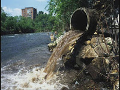

¿Te preocupa la salud de nuestro planeta y estás preparado para hacer lo que esté en tus manos para salvarlo?
ALgunos metodos para ayudar a salvar el planeta son:
Ahorrar el agua
1. Alimentación
Desperdiciar el agua es una de las maneras más nocivas de impactar la salud del planeta. Tomar la decisión de usar menos agua es algo que podrás a hacer de inmediato. Si vives en un área en donde escasea el agua, esta decisión será incluso mucho más importante para la salud del medioambiente de tu región. Trata de practicar la mayor cantidad de los puntos de la lista a continuación:
Revisa y arregla cualquier fuga de agua. Un grifo que gotea podría desperdiciar mucha agua.
Instala dispositivos ahorradores de agua en los grifos e inodoros. Una ducha de mano de bajo flujo podría ser un buen primer paso.
No laves la vajilla con el grifo abierto continuamente. Emplea un método que requiera menos agua para lavar los platos.
Apaga el suministro de agua de la lavadora para evitar cualquier fuga de agua. No es necesario que esté encendido todo el tiempo.
Cambia los inodoros antiguos por unos más nuevos que usen muchísima menos agua.
Lava y seca solamente cargas llenas de ropa sucia o platos. Lavar la mitad de una carga desperdicia agua.
No riegues el césped con demasiada agua.
Cuando te cepilles los dientes, no dejes el grifo abierto.
Utiliza menos químicos
Los químicos que usamos para limpiar nuestros cuerpos, casas, autos y todo lo demás se van por el desagüe o son absorbidos por el césped y al final terminan en el suministro de agua. Debido a que la mayoría de gente utiliza químicos muy fuertes para todo tipo de cosas, los químicos son un verdadero peligro para las vías fluviales y la vida acuática. Los químicos tampoco son buenos para los seres humanos, así que haz tu mejor esfuerzo para reducir su uso. Podrás hacer lo siguiente:
Infórmate sobre las alternativas de los productos domésticos de limpieza que no contengan químicos peligrosos. Por ejemplo, para los trabajos de limpieza básicos, emplear una solución de ½ de vinagre blanco y ½ de agua funciona igual que casi la mayoría de limpiadores comerciales. El bicarbonato de sodio y la sal también son limpiadores no tóxicos y económicos.
Cuando no haya alternativas buenas de un producto tóxico, emplea la cantidad mínima requerida para un resultado higiénico y efectivo.
En lugar de usar champús y jabones repletos de químicos, prueba hacerlos tú mismo.
En lugar de usar pesticidas o herbicidas, busca métodos naturales para deshacerte de la mala hierba y las plagas..
Usa menos electricidad
El carbón y el gas natural son las fuentes de energía más comunes que se convierten en electricidad. La quema de estas substancias es un factor determinante en la contaminación mundial del aire. Reducir tu dependencia de la electricidad será excelente para que contribuyas a salvar el planeta.[3] Esto es lo que puedes hacer:
Haz uso de la energía solar para la calefacción del hogar y del agua.
Apaga los equipos eléctricos en la noche cuando te vayas del trabajo.
Si tienes aire acondicionado central, no cierres las rejillas de las habitaciones que no se usan.
Baja el termostato del calentador de agua a 50 °C (120 °F).
Baja o apaga el calentador de agua cuando estés ausente por periodos largos de tiempo.
Apaga las luces que no uses cuando salgas de una habitación por un momento breve.
Gradúa la temperatura del refrigerador a 2-3 °C (36-38 °F) y el congelador a -17,-15 °C (0-5 °F).
Cuando uses el horno y esté en uso, abre la puerta la menor cantidad de veces, porque cada vez que la abres, baja la temperatura unos 25 a 30 grados.
Limpia el filtro de pelusa de la secadora después de cada carga para que emplee menos energía.
Lava la ropa con agua tibia o fría en lugar de agua caliente.
Apaga las luces, las computadoras y demás aparatos cuando no los uses.
Utiliza bombillas fluorescentes compactas para ahorrar dinero y energía.
Planta árboles para que le den sombra a tu casa.
Cambia las ventanas antiguas por unas que sean eficientes con la energía.
Mantén el termostato a una mayor temperatura en verano y una menor en invierno cuando no estés en casa.
Aísla tu casa lo mejor que puedas.
No conduzcas ni tomes vuelos tan seguido
Otra gran fuente de contaminación del aire que ha producido el calentamiento global son las emisiones de los autos, camiones, aviones y demás vehículos. La fabricación de los vehículos, la gasolina necesaria para que funcionen, los químicos que queman y la producción de carreteras tienen parte de la responsabilidad. Si te es posible no conducir ni tomar vuelos tan seguido, harás mucho por salvar al planeta.[4]
Camina o ve en bicicleta en lugar de conducir, en lo posible. ¡Busca las vías para bicicletas en tu localidad y úsalas!
Si no te es posible ir en bicicleta o caminar al trabajo, únete a un viaje compartido en auto o furgoneta.
Reporta los vehículos que despidan humo en la agencia de aire local.
Mantén tu vehículo apropiadamente. Compra llantas radiales y mantenlas bien infladas. Para minimizar las emisiones dañinas, pinta con brochas o rodillos en lugar de usar pinturas en aerosol.
